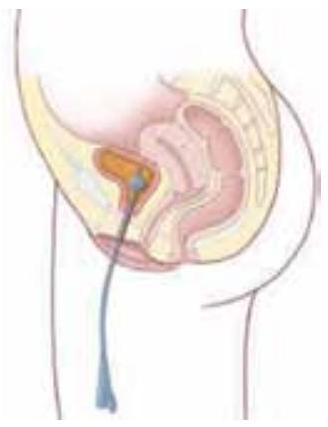
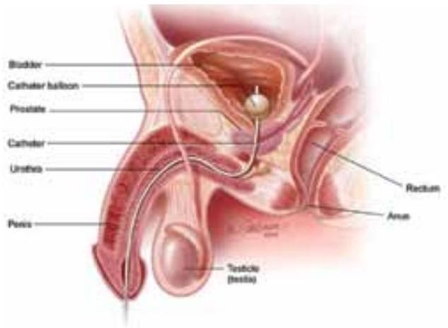
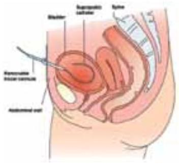
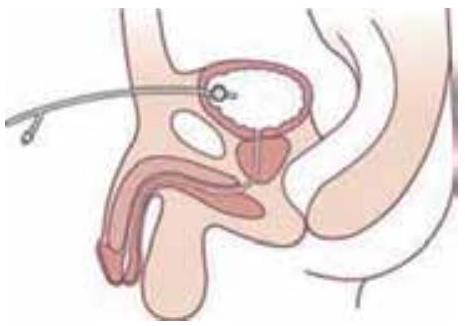

Fundamentals of Catheterisation
3. Terminology (definitions)
A catheter is a thin hollow flexible tube which can be inserted in the bladder either through the urethra (urethral) or suprapubic channel to drain the urine.
3.1 Transurethral or suprapubic catheterisation
Transurethral indwelling catheterisation or urinary catheterisation is defined as passage of a catheter into the urinary bladder via the urethra (urethral catheter). MeSH term [4] (Fig. 1 and 2). Transurethral indwelling catheterisation is also called urethral catheterisation. In this document we only use the term urethral catheterisation.
Suprapubic catheterisation is the insertion of a catheter into the bladder via the anterior abdominal wall. (Fig. 3 and 4)
Urethral catheterisation
Fig. 1 Female
Fig. 2 Male
Suprapubic catheterisation
Fig. 3 Without balloon
Fig. 4 With balloon
3.2 Short-term or long-term catheterisation
What is called short-term or long-term use in catheterisation depends on the indication. For practical reasons this guideline considers a short-term catheter to remain in situ for no longer than 14 days. [5]
Accordingly, long-term catheters remain in situ for a period exceeding 14 days, usually because of urinary retention secondary to disease conditions. [5]
3.3 Closed drainage system
A closed catheter drainage system is an aseptic system in which the path from the tip of the catheter inserted into the bladder, to the bag which catches urine, is closed and should not be disconnected. This in order to eliminate inoculation of the urinary tract with bacteria via the catheter drainage tubing and from the collection bag. [6]
The term 'closed drainage' is, however, not strictly accurate as there are numerous portals of entry for pathogens and the system must be opened to allow emptying and be disconnected when the drainage bag is changed.
4. Alternatives, indications and contraindications
4.1 Alternatives to placing an indwelling catheter
An indwelling catheter should only be placed when there is a clear indication. It should not stay in place longer than necessary. It is important first to consider alternatives before placing an indwelling catheter; a catheter is the last resort when other options have failed or proved to be insufficient. To insert a catheter only for the comfort of the nursing staff is irresponsible.
The following alternatives to an indwelling catheter should be considered:
- Male external catheter [7, 8, 9, 10, 11, 12, 13, 14, 15, 16, 17, 18, 19, 20]
- Intermittent catheterisation by a nurse or family and intermittent self catheterisation by the patient [8, 12, 13, 15, 16, 17, 18]
- Continence pad / containment product [10, 15]
| Recommendations | LE | GR |
|---|---|---|
| - Use of a male external catheter as an alternative to an indwelling urethral catheter in cooperative male patients without urinary retention or bladder outlet obstruction | 3 | B |
| - In appropriate patients use of a suprapubic catheter, male external or intermittent catheter are preferable to an indwelling urethral catheter [20] | 2b | B |
| - Consider other methods for management, including male external catheters or intermittent catheterisation, when appropriate [13] | 1b | A |
| - Avoid use of urinary catheters in patients and nursing home residents for management of incontinence [16] | 1b | B |
| - Intermittent catheterisation is preferable to indwelling urethral or suprapubic catheters in patients with bladder emptying dysfunction [16] | 1b | B |
| - Intermittent catheterisation should be used in preference to an indwelling catheter if it is clinically appropriate and a practical option for the patient | 1b | A |
| - There is a lower rate of infection in those with a suprapubic rather than urethral catheters despite the former being used for two weeks or longer [8, 21] | 4 | C |
| - To insert a catheter only for the comfort of the nursing personnel is irresponsible | 4 | C |
4.2 Indications for urethral catheterisation
- Acute and chronic urinary retention. [9, 10, 15, 16, 22, 23, 24, 25, 26, 27]
- Maintain a continuous outflow of urine for patients with voiding difficulties, as a result of neurological disorders that cause paralysis or loss of sensation affecting urination. [9, 10, 16, 22]
- Need for accurate measurements of urinary output in critically ill patients. [9, 10, 15, 16, 22, 23, 24, 25, 26]
- Perioperative use for selected surgical procedures. [9, 15, 16, 22, 23, 24]
- Patients undergoing urological surgery or other surgery on contiguous structures of the genitourinary tract. [9, 10, 16, 23, 24, 25, 26]
- Anticipated prolonged duration of surgery. [16, 25]
- Need for intra-operative monitoring of urinary output. [16, 25]
- To assist in healing of open sacral or perineal wounds in incontinent patients. [10, 16, 22, 24, 25]
- Patient requires prolonged immobilisation (e.g. potentially unstable thoracic or lumbar spine, multiple traumatic injuries such as pelvic fractures). [16, 25]
- To allow bladder irrigation/lavage. [23, 24, 26]
- To facilitate continence and maintain skin integrity (when conservative treatment methods have been unsuccessful). [9, 10, 15, 22, 24, 26]
- To improve comfort for end of life care if needed. [9, 10, 16, 22, 23, 24, 25, 26]
- Management of intractable incontinence. [24, 27]
4.3 Contraindications for urethral catheterisation
- Acute prostatitis [23, 28]
- Suspicion of urethral trauma [29]
4.4 Short-term versus long-term catheterisation
Short-term catheterisation is mostly used:
- During surgical procedures and post-operative care
- For exact monitoring of urine output in acute illness
- For relief of acute or chronic urinary retention
- Instillation of medication directly in the bladder
Long-term catheterisation can be necessary in:
- Bladder outlet obstruction (BOO), in patients who are unsuitable for surgical relief of BOO
- Chronic retention, often as a result of neurological injury or disease where intermittent catheterisation is not possible [21]
- Debilitated, paralysed or comatose patients in presence of skin breakdown and infected pressure ulcers - only as a last resort when alternative non-invasive approaches are unsatisfactory or unsuccessful
- Cases where a patient insists on this form of management after discussion of the risks. [30]
- Intractable incontinence when all other measures have been tried and proven to be ineffective. [31]
- Intractable urinary incontinence where catheterisation enhances the patient's quality of life - only as last resort when alternative non-invasive approaches are unsatisfactory or unsuccessful.
4.5 Indications for suprapubic catheterisation
In addition to the indications of the urethral catheterisation the following indications apply:
- Acute and chronic urine retention that is not able to be adequately drained with a urethral catheter. [23, 24, 28, 32, 33, 34]
- Preferred by patient due to patient needs e.g. wheelchair user, sexual issues. [9, 24]
- Acute prostatitis. [23, 28]
- Obstruction, stricture, abnormal urethral anatomy. [23]
- Pelvic trauma. [23, 24]
- Complications of long-term urethral catheterisation. [23]
- When long-term catheterisation is used to manage incontinence. [23]
- Complex urethral or abdominal surgery. [23]
- Faecally incontinent patients who are constantly soiling urethral catheter. [23]
4.6 Contraindications for suprapubic catheterisation
- Known or suspected carcinoma of the bladder. [12, 23, 24, 32, 35, 36, 37, 38, 39, 40, 41]
- Suprapubic catheterisation is absolutely contraindicated in the absence of an easily palpable or ultrasonographically localised distended urinary bladder. [12, 23, 24, 35, 36, 37, 38, 39, 40]
- Previous lower abdominal surgery. [24, 32, 35]
- Coagulopathy (until the abnormality is corrected). [12, 24, 32]
- Ascites. [24, 32]
- Prosthetic devices in lower abdomen e.g. hernia mesh. [23, 32, 41]
4.7 Advantages of suprapubic catheterisation
There is little evidence-based research on the use of suprapubic catheters. However, experts believe that there may be several advantages to their use when compared with urethral catheterisation:
- Less risk of urethral trauma, necrosis, or catheter-induced urethritis. [12, 23, 24, 32, 36, 37, 38, 39, 40, 43]
- Reduced risk of catheter contamination with micro-organisms commonly found in the bowel. [12, 24, 36, 37, 38, 39, 40, 42, 43, 44]
- Greater comfort, particularly for patients who are chair bound. [12, 23, 24, 32, 36, 37, 38, 42, 44, 40]
- Easier access to the entry site for cleansing and catheter change. [12, 23, 24, 32, 36, 37, 39]
- More appropriate in respect to a person's sexual activity (intercourse). [23, 24, 32, 37]
- Can be blocked off and the ability to void urethral assessed prior to removal of the suprapubic catheter. [12, 23, 24, 32, 36, 37, 38, 39, 40, 43, 44]
Limitations of suprapubic catheters:
- Insertion is an invasive procedure with the risk of bleeding and visceral injury. [45]
- The patient may still leak urine via the urethra. [45]
- Specialised training may be required for healthcare professionals and carers for the changing of a suprapubic catheter. [45]
- Patients with artificial heart valves may require antibiotic therapy prior to initial insertion or routine catheter change; however this will depend on local healthcare management policy.
- Patients on anticoagulant therapy will require their coagulation levels checking prior to insertion of a suprapubic catheter. Anticoagulant therapy and coagulations levels will depend on local healthcare management policy.
See 4.1 for alternatives.
See Appendix A Decision flowchart for indwelling catheterisation